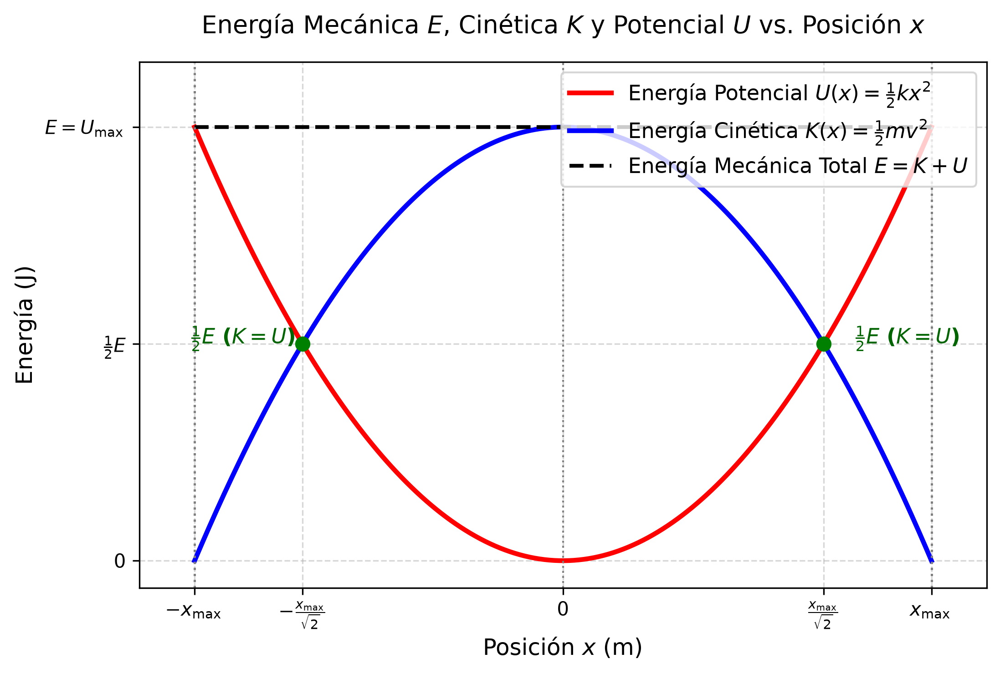

⚡ Tema 2.2: Energía Potencial Elástica y Trabajo
Intuición y Propósito del Tema: La fuerza elástica o recuperadora dada por la Ley de Hooke (\(F = -k \Delta x\)) es una fuerza variable y conservativa. * En criollo: Cuanto más estiras o compprimes un resorte, más fuerza tenés que hacer. Como la fuerza no es constante, el trabajo no se calcula como un simple producto (\(F \cdot d\)), sino integrando la fuerza. Ese trabajo que realizás contra el resorte queda "almacenado" en forma de Energía Potencial Elástica (\(U\)). * Eje Conceptual: Calcular el trabajo realizado por y contra la fuerza recuperadora elástica, demostrar la conservación de la energía mecánica en sistemas elásticos sin fricción y deducción analítica de variables de velocidad en función de la posición.
📌 Contenido de esta nota (Índice interactivo)
- ⚡ Tema 2.2: Energía Potencial Elástica y Trabajo
- 1. Traductor de Lenguaje Físico y Notación
- 2. Trabajo de la Fuerza Elástica (Fuerza Variable)
- 3. Deducción de la Energía Potencial Elástica \(U(x)\)
- 4. Conservación de la Energía Mecánica en Sistemas Elásticos
- 5. Análisis Dimensional y Cancelación de Unidades Paso a Paso
- ⚠️ 6. Trampas y Errores Típicos en Exámenes (UNCA)
- 📝 7. Ejercicios Resueltos Paso a Paso de Parcial
- 8. Conexión con la Unidad III (Movimiento Armónico Simple)
- 🔗 Enlaces Relacionados
- Referencias
Intuición y Propósito del Tema: La fuerza elástica o recuperadora dada por la Ley de Hooke (\(F = -k \Delta x\)) es una fuerza variable y conservativa. * En criollo: Cuanto más estiras o compprimes un resorte, más fuerza tenés que hacer. Como la fuerza no es constante, el trabajo no se calcula como un simple producto (\(F \cdot d\)), sino integrando la fuerza. Ese trabajo que realizás contra el resorte queda "almacenado" en forma de Energía Potencial Elástica (\(U\)). * Eje Conceptual: Calcular el trabajo realizado por y contra la fuerza recuperadora elástica, demostrar la conservación de la energía mecánica en sistemas elásticos sin fricción y deducción analítica de variables de velocidad en función de la posición.
📌 Contenido de esta nota (Índice interactivo)
- ⚡ Tema 2.2: Energía Potencial Elástica y Trabajo
- 1. Traductor de Lenguaje Físico y Notación
- 2. Trabajo de la Fuerza Elástica (Fuerza Variable)
- 3. Deducción de la Energía Potencial Elástica \(U(x)\)
- 4. Conservación de la Energía Mecánica en Sistemas Elásticos
- 5. Análisis Dimensional y Cancelación de Unidades Paso a Paso
- ⚠️ 6. Trampas y Errores Típicos en Exámenes (UNCA)
- 📝 7. Ejercicios Resueltos Paso a Paso de Parcial
- 8. Conexión con la Unidad III (Movimiento Armónico Simple)
- 🔗 Enlaces Relacionados
- Referencias
1. Traductor de Lenguaje Físico y Notación
| Símbolo Formal | Lectura Universitaria | Significado Físico / Intuición | Unidades SI | Unidades Fundamentales |
|---|---|---|---|---|
| \(W_{\text{ext}}\) | Trabajo de la Fuerza Externa | Trabajo realizado por una agente externo para deformar un cuerpo elástico. | \(\text{Joule} \, (\text{J})\) | \(\text{kg} \cdot \text{m}^2 \cdot \text{s}^{-2}\) |
| \(W_{\text{cons}}\) | Trabajo de la Fuerza Recuperadora | Trabajo realizado por la propia fuerza interna del resorte (\(W_{\text{cons}} = -\Delta U\)). | \(\text{Joule} \, (\text{J})\) | \(\text{kg} \cdot \text{m}^2 \cdot \text{s}^{-2}\) |
| \(U\) (o \(E_p\)) | Energía Potencial Elástica | Energía mecánica almacenada en el cuerpo debido a su deformación elástica. | \(\text{Joule} \, (\text{J})\) | \(\text{kg} \cdot \text{m}^2 \cdot \text{s}^{-2}\) |
| \(K\) (o \(E_c\)) | Energía Cinética | Energía asociada al estado de movimiento traslacional de la masa (\(K = \frac{1}{2} m v^2\)). | \(\text{Joule} \, (\text{J})\) | \(\text{kg} \cdot \text{m}^2 \cdot \text{s}^{-2}\) |
| \(E\) (o \(E_m\)) | Energía Mecánica Total | Suma de energía cinética y energía potencial (\(E = K + U\)). | \(\text{Joule} \, (\text{J})\) | \(\text{kg} \cdot \text{m}^2 \cdot \text{s}^{-2}\) |
| \(k\) | Constante de Rigidez / Elástica | Medida de la rigidez del resorte u objeto deformable. | \(\text{N/m}\) | \(\text{kg} \cdot \text{s}^{-2}\) |
| \(x_{\max}\) (o \(A\)) | Deformación Máxima / Amplitud | Desplazamiento máximo desde el punto de equilibrio (\(x = 0\)). | \(\text{m}\) | \(\text{m}\) |
2. Trabajo de la Fuerza Elástica (Fuerza Variable)
En la Ley de Hooke, la fuerza elástica es opuesta y proporcional a la deformación[cite: 2, 3]: $\(F_{\text{resorte}} = -k \cdot x\)$
Como la fuerza varía continuamente con la posición \(x\), no se puede usar la fórmula simple \(W = F \cdot \Delta x\). Se debe recurrir al cálculo integral[cite: 2]:
graph LR
A["Trabajo Elástico"] --> B["<b>Agente Externo:</b><br/>Aplica F_ext = +k*x para estirar/comprimir.<br/>W_ext = +1/2*k*(x2² - x1²) > 0"]
A --> C["<b>Fuerza Restitutiva:</b><br/>Opone F_res = -k*x.<br/>W_res = -1/2*k*(x2² - x1²) = -ΔU"]🔬 Cálculo Integral del Trabajo de la Fuerza Restitutiva (Explicación Paso a Paso)
Pregunta de Parcial UNCA: "Demostrar analíticamente el trabajo realizado por la fuerza restauradora de un resorte al desplazarse desde una posición \(x_1\) hasta \(x_2\)."
Justificación Analítica de cada Paso:
- Paso 1 (Planteo de la Integral Definida):
$\(W_{\text{resorte}} = \int_{x_1}^{x_2} (-k \cdot x) \, dx\)$ -
¿Por qué? La fuerza elástica no es constante, varía linealmente con la posición (\(F = -k \cdot x\)). Para sumar infinitos aportes infinitamente pequeños de trabajo (\(dW = F \cdot dx\)), aplicamos la integral definida entre el punto inicial \(x_1\) y el punto final \(x_2\).
-
Paso 2 (Extracción de la Constante de Rigidez):
$\(= -k \int_{x_1}^{x_2} x \, dx\)$ -
¿Por qué? La constante del resorte \(k\) es un escalar fijo. Por la propiedad de linealidad de las integrales, las constantes multiplicativas salen fuera de la integral.
-
Paso 3 (Integración de la Función Potencia):
$\(= -k \left[ \frac{x^2}{2} \right]_{x_1}^{x_2}\)$ -
¿Por qué? Aplicamos la regla fundamental de integración para potencias: \(\int x^n \, dx = \frac{x^{n+1}}{n+1}\). Como la potencia de \(x\) es \(1\), la primitiva es \(\frac{x^2}{2}\). Los corchetes indican que debemos evaluar entre los límites \([x_1, x_2]\).
-
Paso 4 (Aplicación del Regla de Barrow / Teorema Fundamental del Cálculo):
$\(= -k \left( \frac{x_2^2}{2} - \frac{x_1^2}{2} \right) = -\frac{1}{2} k x_2^2 - \left( -\frac{1}{2} k x_1^2 \right)\)$ -
¿Por qué? Evaluamos la primitiva en el límite superior \(x_2\) y le restamos la primitiva evaluada en el límite inferior \(x_1\). Luego distribuimos el factor \(-k\).
-
Paso 5 (Agrupación Algebraica y Factor Común del Signo Negativo):
$\(= -\left( \frac{1}{2} k x_2^2 - \frac{1}{2} k x_1^2 \right)\)$ - ¿Por qué? Al sacar el signo negativo (\(-\)) como factor común exterior, el paréntesis representa directamente la variación de la energía potencial elástica (\(\Delta U = U_2 - U_1\)). Con esto se demuestra formalmente que \(W_{\text{resorte}} = -\Delta U\).
3. Deducción de la Energía Potencial Elástica \(U(x)\)
En la mecánica clásica, para toda fuerza conservativa, el trabajo realizado por dicha fuerza sobre una partícula que se desplaza entre dos puntos es igual al negativo de la variación de su energía potencial[cite: 2]:
Comparando con el resultado integral obtenido en la sección anterior[cite: 2]:
Igualando término a término: $\(-\Delta U = -\left( U_2 - U_1 \right) = -\left( \frac{1}{2} k x_2^2 - \frac{1}{2} k x_1^2 \right)\)$
Tomando como nivel de referencia de energía potencial cero el punto de equilibrio libre de deformación (\(x = 0 \implies U(0) = 0\))[cite: 2]:
Interpretación Cátedra UNCA: La Energía Potencial Elástica es una cantidad escalar siempre positiva o nula (\(U(x) \ge 0\)), independientemente de si la deformación \(x\) es por estiramiento (\(x > 0\)) o compresión (\(x < 0\)), ya que la deformación está elevada al cuadrado[cite: 2].
4. Conservación de la Energía Mecánica en Sistemas Elásticos
En ausencia de fuerzas disipativas (como el rozamiento o la fricción viscosa), la Energía Mecánica Total (\(E\)) de un sistema masa-resorte se conserva constante en todo instante del movimiento[cite: 2]:

Deducción Analítica de la Rapidez en función de la Posición \(v(x)\):
Pregunta de Parcial UNCA: "Obtener la expresión de la rapidez \(v\) de una masa \(m\) sujeta a un resorte de constante \(k\) para cualquier posición arbitraria \(x\) a partir del Principio de Conservación de la Energía Mecánica."[cite: 2]
Desarrollo Paso a Paso:
-
Planteo del Principio de Conservación: $\(\frac{1}{2} m v^2 + \frac{1}{2} k x^2 = \frac{1}{2} k x_{\max}^2\)$[cite: 2]
-
Multiplicación de toda la ecuación por 2: $\(m v^2 + k x^2 = k x_{\max}^2\)$[cite: 2]
-
Despeje del término cinético: $\(m v^2 = k x_{\max}^2 - k x^2 = k (x_{\max}^2 - x^2)\)$[cite: 2]
-
Despeje de \(v^2\): $\(v^2 = \frac{k}{m} (x_{\max}^2 - x^2)\)$[cite: 2]
-
Aplicación de raíz cuadrada a ambos miembros: $\(v(x) = \pm \sqrt{\frac{k}{m} (x_{\max}^2 - x^2)} = \pm \omega \sqrt{x_{\max}^2 - x^2}\)$[cite: 2]
Puntos Extremos Físicos:
- En la posición de equilibrio (\(x = 0\)): La energía es puramente cinética, por lo que la rapidez alcanza su valor máximo[cite: 2]: $\(v_{\max} = \sqrt{\frac{k}{m}} x_{\max} = \omega x_{\max}\)$[cite: 2]
- En los puntos de retorno (\(x = \pm x_{\max}\)): La rapidez es cero (\(v = 0\)), y toda la energía es puramente potencial elástica[cite: 2].
5. Análisis Dimensional y Cancelación de Unidades Paso a Paso
Caso 1: Unidades de la Energía Potencial Elástica \(U\)
-
Expresión de Unidades en el SI: $\([U] = [k] \cdot [x]^2 = \left( \frac{\text{N}}{\text{m}} \right) \cdot \text{m}^2\)$[cite: 2]
-
Cancelación Estricta de Metros: $\([U] = \frac{\text{N} \cdot \text{m}^2}{\text{m}} = \text{N} \cdot \text{m}^{2-1} = \text{N} \cdot \text{m} = \text{Joule} \, (\text{J})\)$[cite: 2]
-
Descomposición a Unidades Fundamentales (\(\text{kg}, \text{m}, \text{s}\)): Como \(1\,\text{N} = 1\,\text{kg} \cdot \text{m} \cdot \text{s}^{-2}\): $\([U] = (\text{kg} \cdot \text{m} \cdot \text{s}^{-2}) \cdot \text{m} = \text{kg} \cdot \text{m}^2 \cdot \text{s}^{-2}\)$
Caso 2: Unidades de la Rapidez \(v(x)\) a partir de \(\sqrt{k/m}\)
-
Análisis del radicando \(\frac{k}{m}\): $\(\left[ \frac{k}{m} \right] = \frac{\frac{\text{N}}{\text{m}}}{\text{kg}} = \frac{\frac{\text{kg} \cdot \text{m} \cdot \text{s}^{-2}}{\text{m}}}{\text{kg}} = \frac{\text{kg} \cdot \text{s}^{-2}}{\text{kg}} = \text{s}^{-2}\)$[cite: 2]
-
Aplicación de la Raíz Cuadrada: $\(\left[ \sqrt{\frac{k}{m}} \right] = \sqrt{\text{s}^{-2}} = \text{s}^{-1} = \frac{1}{\text{s}}\)$[cite: 2]
-
Multiplicación por el término de distancia (\(\sqrt{\text{m}^2} = \text{m}\)): $\([v] = \left(\frac{1}{\text{s}}\right) \cdot \text{m} = \frac{\text{m}}{\text{s}}\)$
⚠️ 6. Trampas y Errores Típicos en Exámenes (UNCA)
⚠️ Trampa 1: Usar la Fórmula de Trabajo Constante (\(W = F \cdot x\)) para Resortes
Error común: Calcular el trabajo para estirar un resorte \(18\,\text{cm}\) con constante \(k = 19,6\,\text{N/m}\) multiplicando \(W = (-k \cdot x) \cdot x = -k x^2\).
Por qué se invalida: La fuerza es variable. El trabajo correcto requiere el factor \(1/2\) derivado de la integración: \(W = \frac{1}{2} k x^2\)[cite: 2].⚠️ Trampa 2: Olvidar Elevar al Cuadrado la Conversión de Centímetros a Metros
Error grave: Reemplazar \(x = 18\,\text{cm}\) directamente como \(0,18\) sin verificar la potencia en \(x^2\).
Regla de Parcial:
$\(x = 18\,\text{cm} = 0,18\,\text{m} \implies x^2 = (0,18\,\text{m})^2 = 0,0324\,\text{m}^2\)$⚠️ Trampa 3: Signo del Trabajo de la Fuerza Externa vs. Trabajo del Resorte
Pregunta Teórica de Parcial: El trabajo realizado por el resorte al estirarse desde el equilibrio es negativo (\(W_{\text{resorte}} = -\frac{1}{2} k x^2\)), mientras que el trabajo realizado por la fuerza externa aplicante es positivo (\(W_{\text{ext}} = +\frac{1}{2} k x^2\))[cite: 2].
📝 7. Ejercicios Resueltos Paso a Paso de Parcial
Ejercicio 1 (Cálculo Energético Completo - Apunte Cátedra UNCA):
Un resorte de constante de rigidez \(k = 19,6\,\text{N/m}\) se estira \(18,0\,\text{cm}\) desde el punto de equilibrio y se libera a partir del reposo.
Para la oscilación resultante con una masa \(m = 0,3\,\text{kg}\), determine:
a) La Energía Mecánica Total (\(E\)).[cite: 2]
b) La velocidad \(v\) cuando la masa se encuentra a \(x = 0,09\,\text{m}\) de la posición de equilibrio.[cite: 2]
Desarrollo Paso a Paso (Ejercicio 1):
- Paso 1: Conversión de datos al Sistema Internacional (SI)
- \(k = 19,6\,\text{N/m}\)[cite: 2]
- \(x_{\max} = 18,0\,\text{cm} = 0,18\,\text{m}\)[cite: 2]
- \(m = 0,3\,\text{kg}\)[cite: 2]
-
\(x = 0,09\,\text{m}\)[cite: 2]
-
Paso 2: a) Cálculo de la Energía Mecánica Total (\(E\)) Como se libera del reposo en la máxima deformación (\(v = 0\) en \(x_{\max}\)): $\(E = U_{\max} = \frac{1}{2} k x_{\max}^2\)$[cite: 2] $\(E = \frac{1}{2} \cdot (19,6\,\frac{\text{N}}{\text{m}}) \cdot (0,18\,\text{m})^2 = 0,5 \cdot 19,6 \cdot 0,0324 = 0,31752\,\text{J} \approx 0,32\,\text{J}\)$[cite: 2]
-
Paso 3: b) Cálculo de la Frecuencia Angular (\(\omega\)) $\(\omega = \sqrt{\frac{k}{m}} = \sqrt{\frac{19,6\,\frac{\text{N}}{\text{m}}}{0,3\,\text{kg}}} = \sqrt{65,333}\,\text{s}^{-1} \approx 8,083\,\text{s}^{-1}\)$[cite: 2]
-
Paso 4: b) Cálculo de la velocidad en \(x = 0,09\,\text{m}\) $\(v = \omega \sqrt{x_{\max}^2 - x^2}\)$[cite: 2] $\(v = 8,083 \cdot \sqrt{(0,18)^2 - (0,09)^2} = 8,083 \cdot \sqrt{0,0324 - 0,0081} = 8,083 \cdot \sqrt{0,0243}\)$ $\(v = 8,083 \cdot 0,15588 = 1,26\,\frac{\text{m}}{\text{s}}\)$[cite: 2]
8. Conexión con la Unidad III (Movimiento Armónico Simple)
El estudio de la conservación de la energía elástica e hipervínculo con la constante \(\omega = \sqrt{k/m}\) concluye el tratamiento de la Unidad II y abre paso a la Unidad III: * Tema 3.1: Reemplazar las posiciones \(x(t) = x_{\max} \cos(\omega t + \phi)\) en las expresiones de \(K(t)\) y \(U(t)\) para demostrar que \(E = \frac{1}{2} k x_{\max}^2 [\sin^2(\omega t + \phi) + \cos^2(\omega t + \phi)] = \frac{1}{2} k x_{\max}^2\)[cite: 2].
🔗 Enlaces Relacionados
- ⬅️ Tema 2.1: Elasticidad, Módulos y Ley de Hooke
- ➡️ Tema 3.1: Movimiento Armónico Simple - Ecuaciones
- 📚 Menú Principal de Física II
Referencias
- Cátedra: Física II – UNCA (Unidad 2: Consideraciones Energéticas en Sistemas Elásticos).